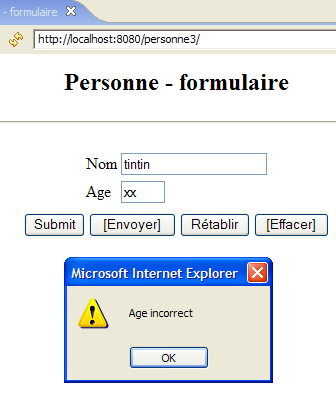
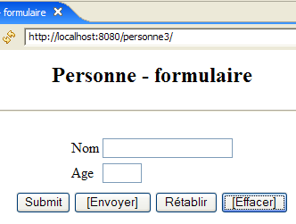
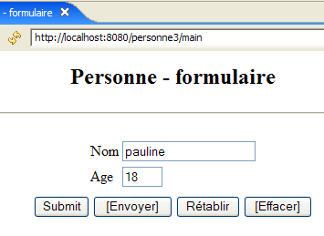
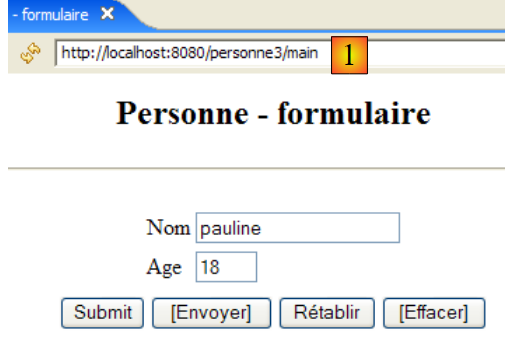
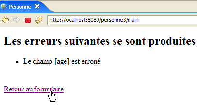
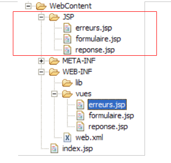
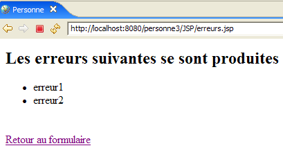

7. Webapplicatie MVC [personne] – versie 3
Aanbevolen lectuur in [ref1]: hoofdstuk 9
7.1. Introduction
We stellen voor om JavaScript-code toe te voegen aan de HTML-pagina’s die naar de browser worden verzonden. Het is de browser die de in de weergegeven pagina ingebedde JavaScript-code uitvoert. Deze technologie staat los van de technologie die door de webserver wordt gebruikt om het document HTML te genereren (Java/servlets/JSP, ASP.NET, ASP, PHP, Perl, Python, ...).
[formulaire.jsp]
De weergave van deze pagina ziet er als volgt uit:

De knoppen waarvan de tekst is omkaderd, maken gebruik van JavaScript-code die is ingebed in de pagina HTML:
Tekst | Type HTML | Functie |
<submit> | vervult de functie van de knop [Envoyer] uit eerdere versies: stuurt de ingevoerde waarden naar de controller | |
<button> | nieuwe knop – controleert lokaal de geldigheid van de ingevoerde gegevens voordat deze naar de controller worden verzonden | |
<reset> | zet het formulier terug in de staat waarin het oorspronkelijk door de browser werd ontvangen | |
<button> | wist de inhoud van beide invoervelden |
Hier volgt een voorbeeld van het gebruik van de knoppen [Envoyer] en [Effacer]:
 |  |
 |  |
We zullen ook JavaScript-code gebruiken om de koppeling [Retour au formulaire] van de weergaven [erreurs] en [réponse] te beheren. Laten we de weergave [réponse] als voorbeeld nemen:
 | 1  |
Het verschil zit in de URL die wordt weergegeven in [1]. In de vorige versie was deze:
Hier maakt de actie geen deel meer uit van de URL, omdat deze wordt verzonden via een POST in plaats van een GET. Deze wijziging heeft tot gevolg dat de enige URL die door de browser wordt weergegeven, [http://localhost:8080/personne3/main] zal zijn, ongeacht de aangevraagde actie.
7.2. Het Eclipse-project
Om het Eclipse-project [mvc-personne-03] van de webapplicatie [/personne3] aan te maken, dupliceren we het project [mvc-personne-02] volgens de procedure beschreven in paragraaf 6.2, pagina 78.
 |  |
7.3. Configuratie van de webapplicatie [personne3]
Het bestand web.xml van de applicatie /personne3 ziet er als volgt uit:
<?xml version="1.0" encoding="UTF-8"?>
<web-app id="WebApp_ID" version="2.4"
xmlns="http://java.sun.com/xml/ns/j2ee"
xmlns:xsi="http://www.w3.org/2001/XMLSchema-instance"
xsi:schemaLocation="http://java.sun.com/xml/ns/j2ee http://java.sun.com/xml/ns/j2ee/web-app_2_4.xsd">
<display-name>mvc-personne-03</display-name>
<!-- ServletPersonne -->
<servlet>
<servlet-name>personne</servlet-name>
<servlet-class>
istia.st.servlets.personne.ServletPersonne
</servlet-class>
<init-param>
<param-name>urlReponse</param-name>
<param-value>
/WEB-INF/vues/reponse.jsp
</param-value>
</init-param>
<init-param>
<param-name>urlErreurs</param-name>
<param-value>
/WEB-INF/vues/erreurs.jsp
</param-value>
</init-param>
<init-param>
<param-name>urlFormulaire</param-name>
<param-value>
/WEB-INF/vues/formulaire.jsp
</param-value>
</init-param>
<init-param>
<param-name>lienRetourFormulaire</param-name>
<param-value>
Retour au formulaire
</param-value>
</init-param>
</servlet>
<!-- Toewijzing ServletPersonne-->
<servlet-mapping>
<servlet-name>personne</servlet-name>
<url-pattern>/main</url-pattern>
</servlet-mapping>
<!-- startbestanden -->
<welcome-file-list>
<welcome-file>index.jsp</welcome-file>
</welcome-file-list>
</web-app>
Dit bestand is identiek aan dat van de vorige versie, op enkele details na:
- regel 6: de weergavenaam van de webapplicatie is gewijzigd in [mvc-personne-03]
De parameter [urlControleur] is verdwenen. In de vorige versie werd deze gebruikt om het doel van POST in de weergave [formulaire] vast te leggen. In deze nieuwe versie is het doel de lege tekenreeks, c.a.d. De URL die door de browser wordt weergegeven. We hebben uitgelegd dat deze altijd [http://localhost:8080/personne3/main] zou zijn, de URL die we nodig hebben voor de POST van de weergave [formulaire].
De startpagina [index.jsp] verandert:
<%@ page language="java" contentType="text/html; charset=ISO-8859-1"
pageEncoding="ISO-8859-1"%>
<!DOCTYPE HTML PUBLIC "-//W3C//DTD HTML 4.01 Transitional//EN">
<%
response.sendRedirect("/personne3/main");
%>
- regel 5: de pagina [index.jsp] leidt de klant door naar de URL van de controller [ServletPersonne] van de applicatie [/personne3].
7.4. De code van de weergaven
7.4.1. De weergave [formulaire]
Deze weergave is als volgt geworden:
Deze wordt gegenereerd door de volgende pagina JSP [formulaire.jsp]:
<%@ page language="java" contentType="text/html; charset=ISO-8859-1"
pageEncoding="ISO-8859-1"%>
<!DOCTYPE HTML PUBLIC "-//W3C//DTD HTML 4.01 Transitional//EN">
<%// de gegevens uit het sjabloon worden opgehaald
String nom = (String) session.getAttribute("nom");
String age = (String) session.getAttribute("age");
%>
<html>
<head>
<title>Personne - formulaire</title>
<script language="javascript">
// -------------------------------
function effacer(){
// de invoervelden worden gewist
with(document.frmPersonne){
txtNom.value="";
txtAge.value="";
}//met
}//wissen
// -------------------------------
function envoyer(){
// controle van de parameters voordat ze worden verzonden
with(document.frmPersonne){
// de naam mag niet leeg zijn
champs=/^\s*$/.exec(txtNom.value);
if(champs!=null){
// de naam is leeg
alert("Vous devez indiquer un nom");
txtNom.value="";
txtNom.focus();
// terug naar de visuele interface
return;
}//if
// de leeftijd moet een positief geheel getal zijn
champs=/^\s*\d+\s*$/.exec(txtAge.value);
if(champs==null){
// de leeftijd is onjuist
alert("Age incorrect");
txtAge.focus();
// terug naar de visuele interface
return;
}//if
// de parameters zijn correct – ze worden naar de server verzonden
submit();
}//met
}//verzenden
</script>
</head>
<body>
<center>
<h2>Personne - formulaire</h2>
<hr>
<form name="frmPersonne" method="post">
<table>
<tr>
<td>Nom</td>
<td><input name="txtNom" value="<%= nom %>" type="text" size="20"></td>
</tr>
<tr>
<td>Age</td>
<td><input name="txtAge" value="<%= age %>" type="text" size="3"></td>
</tr>
<tr>
</table>
<table>
<tr>
<td><input type="submit" value="Submit"></td>
<td><input type="button" value="[Envoyer]" onclick="envoyer()"></td>
<td><input type="reset" value="Rétablir"></td>
<td><input type="button" value="[Effacer]" onclick="effacer()"></td>
</tr>
</table>
<input type="hidden" name="action" value="validationFormulaire">
</form>
</center>
</body>
</html>
De wijzigingen:
- regel 56: het formulier heeft de naam [frmPersonne]. Deze naam wordt gebruikt in de JavaScript-code. Merk op dat het attribuut [action] ontbreekt, waardoor het formulier [frmPersonne] naar de door de browser weergegeven URL wordt verzonden.
- regel 70: de knop [Submit] vervult dezelfde functie als de knop [Envoyer] uit eerdere versies
- regel 71: een klik op de knop [Envoyer] van het type [Button] zorgt ervoor dat de JavaScript-functie [envoyer], gedefinieerd op regel 24, wordt uitgevoerd
- regel 72: de knop [Rétablir] heeft geen andere functie gekregen
- regel 73: als je op de knop [Effacer] van het type [Button] klikt, wordt de JavaScript-functie [effacer] uitgevoerd, die op regel 16 is gedefinieerd
Voordat we de JavaScript-code gaan bespreken, eerst even enkele opmerkingen:
JavaScript beheert de weergegeven pagina en de inhoud ervan als een boomstructuur van objecten, met als wortel het object [document]. In dit document kunnen één of meerdere formulieren voorkomen. [document.frmPersonne] verwijst naar het formulier met de naam [frmPersonne], gedefinieerd op regel 56. Ook dit formulier bevat objecten. De invoervelden maken daar deel van uit. Zo verwijst [document.frmPersonne.txtNom] naar het afbeeldingsobject van het invoerveld HTML, gedefinieerd op regel 60. Het object [txtNom] heeft verschillende eigenschappen, waaronder de eigenschap [value] die de inhoud van het invoerveld aangeeft. Zo verwijst [document.frmPersonne.txtNom.value] naar de inhoud van het invoerveld [txtNom].
- regels 16-22: de JavaScript-functie [effacer] vult de invoervelden [txtNom, txtAge] met een lege tekenreeks.
- regels 24-49: de JavaScript-functie [envoyer] controleert de geldigheid van de waarden in de invoervelden [txtNom, txtAge] voordat deze worden verzonden. Hiervoor maakt de functie gebruik van reguliere expressies.
- regel 28: controleert of de waarde van het invoerveld [txtNom] overeenkomt met het patroon /s*, wat staat voor 0 of meer spaties. Als het antwoord ja is, betekent dit dat de gebruiker geen naam heeft opgegeven. Als er een overeenkomst is met het patroon, zal de variabele champs een andere waarde hebben dan de pointer null; anders krijgt deze de waarde null.
- regel 29: als er een overeenkomst is met het sjabloon
- regel 30: er wordt een bericht aan de gebruiker weergegeven
- regel 32: de lege tekenreeks wordt in het veld [txtNom] geplaatst (er kon een reeks spaties staan)
- regel 33: de knipperende cursor wordt op het veld [txtNom] geplaatst
- regel 34: de functie wordt afgebroken. Er wordt dan geen POST met de ingevoerde waarden naar de server verzonden.
- regels 38-45: we volgen een vergelijkbare procedure met het veld [txtAge]
- regel 47: als we hier zijn aangekomen, zijn de ingevoerde waarden correct. We verzenden (submit) dan het formulier [frmPersonne] naar de webserver. Alles verloopt dan alsof we op de knop met de tekst [Submit] hadden gedrukt.
7.4.2. Het scherm [reponse]
Deze weergave toont de in het formulier ingevoerde waarden wanneer deze geldig zijn:
 |  |
In vergelijking met de vorige versie verschijnt de nieuwe functie pas wanneer de link [Retour au formulaire] uit de weergave [réponse] wordt gebruikt:
|  |
Het verschil zit in de URL die wordt weergegeven in [1]. In de vorige versie was deze:
Hier maakt de actie geen deel meer uit van de URL, omdat deze wordt verzonden via een POST in plaats van een GET. De nieuwe pagina JSP [reponse.jsp] is lqqqaaaaaaaaaqqAAAaaa
volgende:
<%@ page language="java" contentType="text/html; charset=ISO-8859-1"
pageEncoding="ISO-8859-1"%>
<!DOCTYPE HTML PUBLIC "-//W3C//DTD HTML 4.01 Transitional//EN">
<%
// de gegevens van het model worden opgehaald
String nom=(String)request.getAttribute("nom");
String age=(String)request.getAttribute("age");
String lienRetourFormulaire=(String)request.getAttribute("lienRetourFormulaire");
%>
<html>
<head>
<title>Personne</title>
</head>
<body>
<h2>Personne - réponse</h2>
<hr>
<table>
<tr>
<td>Nom</td>
<td><%= nom %>
</tr>
<tr>
<td>Age</td>
<td><%= age %>
</tr>
</table>
<br>
<form name="frmPersonne" method="post">
<input type="hidden" name="action" value="retourFormulaire">
</form>
<a href="javascript:document.frmPersonne.submit();">
<%= lienRetourFormulaire %>
</a>
</body>
</html>
De wijzigingen:
- regels 35-37: de link [Retour au formulaire] bevat JavaScript. Als je op deze link klikt, wordt de JavaScript-code van het attribuut [href] uitgevoerd. Zoals we hebben gezien bij de analyse van [formulaire.jsp], weten we dat deze code de waarden van de velden van het type <input>, <select>, ... uit het formulier [frmPersonne] verstuurt.
- regels 32-34: definiëren het formulier [frmPersonne]. Dit formulier heeft slechts één veld van het type <input type="hidden" ...>, dus een verborgen veld. Dit veld [action] dient om de naam van de uit te voeren actie, in dit geval [retourFormulaire], door te geven aan de controller.
7.4.3. De weergave [erreurs]
Deze weergave geeft invoerfouten in het formulier aan. De aangebrachte wijziging is dezelfde als bij de weergave [réponse]:
 |  |
Het verschil zit in de URL die wordt weergegeven in [1]. In de vorige versie was deze:
Hier maakt de actie geen deel meer uit van de URL, omdat deze wordt verzonden via een POST in plaats van een GET. De nieuwe pagina JSP [reponse.jsp] is als volgt:
<%@ page language="java" contentType="text/html; charset=ISO-8859-1"
pageEncoding="ISO-8859-1"%>
<!DOCTYPE HTML PUBLIC "-//W3C//DTD HTML 4.01 Transitional//EN">
<%@ page import="java.util.ArrayList" %>
<%
// we halen de gegevens uit het model op
ArrayList erreurs=(ArrayList)request.getAttribute("erreurs");
String lienRetourFormulaire=(String)request.getAttribute("lienRetourFormulaire");
%>
<html>
<head>
<title>Personne</title>
</head>
<body>
<h2>Les erreurs suivantes se sont produites</h2>
<ul>
<%
for(int i=0;i<erreurs.size();i++){
out.println("<li>" + (String) erreurs.get(i) + "</li>\n");
}//voor
%>
</ul>
<br>
<form name="frmPersonne" method="post">
<input type="hidden" name="action" value="retourFormulaire">
</form>
<a href="javascript:document.frmPersonne.submit();">
<%= lienRetourFormulaire %>
</a>
</body>
</html>
De nieuwigheden:
- regels 30-32: de nieuwe afhandeling van het klikken op de link. De uitleg hierover in de analyse van [réponse.jsp] geldt ook hier.
7.5. Testen van de weergaven
Om de vorige weergaven te testen, dupliceren we hun pagina’s JSP in de map /WebContent/JSP van het Eclipse-project:

Vervolgens worden in de map JSP de pagina’s als volgt aangepast:
[formulaire.jsp]:
...
<%
// -- test: we maken het sjabloon van de pagina aan
session.setAttribute("nom","tintin");
session.setAttribute("age","30");
%>
<%// de gegevens van het sjabloon worden opgehaald
String nom = (String) session.getAttribute("nom");
String age = (String) session.getAttribute("age");
%>
De regels 4-5 zijn toegevoegd om het sjabloon te maken dat de pagina op regels 9-10 nodig heeft.
[reponse.jsp]:
...
<%
// -- test: de paginasjabloon wordt aangemaakt
request.setAttribute("nom","milou");
request.setAttribute("age","10");
request.setAttribute("lienRetourFormulaire","Retour au formulaire");
%>
<%
// de gegevens van het sjabloon worden opgehaald
String nom=(String)request.getAttribute("nom");
String age=(String)request.getAttribute("age");
String lienRetourFormulaire=(String)request.getAttribute("lienRetourFormulaire");
%>
...
De regels 4-6 zijn toegevoegd om het sjabloon te maken dat de pagina in de regels 11-13 nodig heeft.
[erreurs.jsp]:
<%
// -- test: het paginasjabloon wordt aangemaakt
ArrayList<String> erreurs1=new ArrayList<String>();
erreurs1.add("erreur1");
erreurs1.add("erreur2");
request.setAttribute("erreurs",erreurs1);
request.setAttribute("lienRetourFormulaire","Retour au formulaire");
%>
<%
// de gegevens van het model worden opgehaald
ArrayList erreurs=(ArrayList)request.getAttribute("erreurs");
String lienRetourFormulaire=(String)request.getAttribute("lienRetourFormulaire");
%>
De regels 4-8 zijn toegevoegd om het sjabloon te maken dat de pagina in de regels 13-14 nodig heeft.
Start Tomcat, als dat nog niet is gebeurd, en vraag vervolgens de volgende URL's op:
 |  |
 |
We krijgen inderdaad de verwachte weergaven.
7.6. De controller [ServletPersonne]
De controller [ServletPersonne] van de webapplicatie [/personne3] zal de volgende acties verwerken:
nr. | verzoek | bron | verwerking |
1 | [GET /personne3/main] | door de gebruiker ingevoerde URL | - de lege weergave [formulaire] verzenden |
2 | [POST /personne3/main] met parameters [txtNom, txtAge, action=validationFormulaire] geplaatst | klik op de knop [Envoyer] in de weergave [formulaire] | - controleer de waarden van de parameters [txtNom, txtAge] - als ze onjuist zijn, de weergave [erreurs(erreurs)] verzenden - als ze correct zijn, stuur dan de weergave [reponse(nom,age)] |
3 | [POST /personne3/main] met parameters [action=retourFormulaire] gehost | klik op de link [Terug naar het formulier] in de weergaven [réponse] en [erreurs]. | - de weergave [formulaire], vooraf ingevuld met de laatst ingevoerde waarden, verzenden |
We hebben dus een nieuwe actie die moet worden verwerkt: [POST /personne3/main] met de verzonden parameter [action=retourFormulaire], ter vervanging van de oude actie [GET /personne3/main?action=retourFormulaire].
7.6.1. Skelet van de controller
Het skelet van de controller [ServletPersonne] is identiek aan dat van de vorige versie.
Nieuwigheden:
- regel 11: de tabel [paramètres] bevat niet langer de parameter [urlControleur], die uit het bestand [web.xml] is verwijderd.
De methoden [init, doValidationFormulaire] blijven ongewijzigd. De methoden [doGet, doInit, doRetourFormulaire] zijn licht gewijzigd.
7.6.2. De methode [doGet]
De methode [doGet] moet de actie [POST /personne3/main] verwerken met de verzonden parameter [action=retourFormulaire]:
- regels 6-9: verwerking van de actie [POST /personne3/main] met de verzonden parameter [action=retourFormulaire]
7.6.3. De methode [doInit]
Deze methode verwerkt verzoek nr. 1 [GET /personne3/main]. De code ervan is als volgt:
Nieuw is dat de weergave [formulaire] die in regel 8 wordt weergegeven, het element [action] niet meer in het model heeft.
7.6.4. De methode [doRetourFormulaire]
Deze methode verwerkt verzoek nr. 1 [POST /personne3/main] met [action=retourFormulaire] in de verzonden elementen. De code is als volgt:
Nieuw is dat de weergave [formulaire] die op regel 14 wordt weergegeven, het element [action] niet meer in het sjabloon heeft.
7.7. Tests
Start Tomcat opnieuw op nadat u het Eclipse-project [personne-mvc-03] erin hebt geïntegreerd. Vraag de URL [http://localhost:8080/personne3] op en herhaal vervolgens de tests die als voorbeeld in paragraaf 7.1 worden getoond.